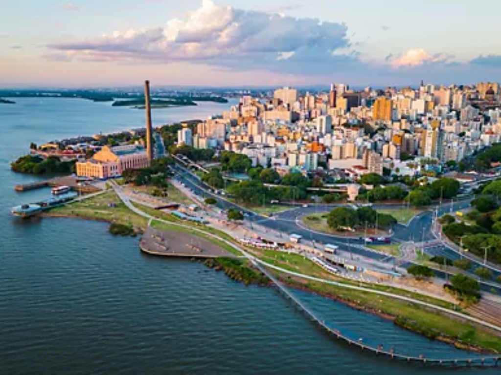

O Rio Grande do Sul é o estado mais ao sul do Brasil e faz parte da Região Sul. Sua capital é Porto Alegre.O estado possui clima subtropical, com invernos frios e verões quentes. Em algumas áreas serranas podem ocorrer geadas e neve. O relevo é formado por planícies, serras e pelos Pampas, vegetação típica da região sul do estado. A economia gaúcha é bastante desenvolvida, destacando-se a agricultura, a pecuária e a indústria. Os principais produtos agrícolas são soja, arroz, milho, trigo e uva. O estado também é importante na criação de gado e na produção de vinhos, principalmente na Serra Gaúcha. A cultura do Rio Grande do Sul é conhecida como cultura gaúcha, marcada pelo chimarrão, churrasco, danças típicas e uso da bombacha. A influência de imigrantes italianos e alemães aparece na culinária, arquitetura e festas tradicionais. Além disso, o estado possui importantes cidades turísticas, como Gramado e Canela, conhecidas pelo clima frio e pelas atrações turísticas.

Voltar